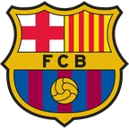

Галатасарай — Штутгарт итог матча 3 ноября
- ТурнирЛига чемпионов
Коротко о матче
- Итог: Галатасарай — Штутгарт 2:0.
- Расчёт модели до матча не сохранился.
Форма: последние матчи
Галатасарай 1 победа из 3
- П1:3

П1:4 В4:2
В4:2
Штутгарт 2 победы из 5
 В3:0
В3:0 П0:1
П0:1- Н1:1
 П2:3
П2:3 В4:2
В4:2
Положение в таблице
| Команда | Место | И | В | Н | П | Голы | Очки |
|---|---|---|---|---|---|---|---|
| Галатасарай | 18 | 4 | 2 | 0 | 2 | 8:9 | 6 |
| Штутгарт | 14 | 4 | 2 | 1 | 1 | 7:4 | 7 |
Страница клуба: Галатасарай · Страница клуба: Штутгарт · Лига: Лига чемпионов · Прогноз на сегодня: Лига чемпионов · Все матчи дня колодой
Материалы носят информационный характер и не гарантируют результат. Реклама букмекеров на сайте не размещается. Сайт только для совершеннолетних (18+).